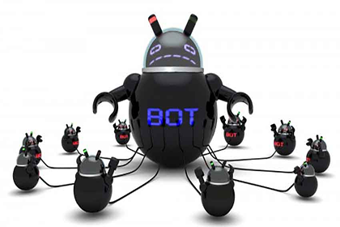
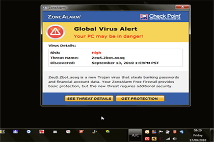
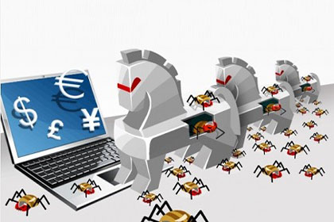

Malware es la abreviatura de “Malicious software”, término que engloba a todo tipo de programa o código informático malicioso cuya función es dañar un sistema o causar un mal funcionamiento.
Es un término que se utiliza para el software diseñado para interrumpir las operaciones de la computadora u obtener acceso a los sistemas informáticos, sin el conocimiento o el permiso del usuario.
El malware puede ser obvio y simple de identificar o puede ser muy sigiloso y casi imposible de detectar.
Estos son los tipos de malware más comunes:
Spyware:
Este malware está diseñado para rastrear y espiar al usuario. El spyware a menudo incluye rastreadores de actividades,
recopilación de pulsaciones de teclas y captura de datos. En el intento por superar las medidas de seguridad,
el spyware a menudo modifica las configuraciones de seguridad. El spyware con frecuencia se agrupa con el software
legítimo o con caballos troyano.
Adware:
El software de publicidad está diseñado para brindar anuncios automáticamente. El adware a veces se instala con algunas versiones de software. Algunos adwares están diseñados para brindar solamente anuncios, pero también es común que el adware incluya spyware
Bot:
Un bot es un malware diseñado para realizar acciones automáticamente, generalmente en línea. Si bien la mayoría de los bots son inofensivos, un uso cada vez más frecuente de bots maliciosos es el de los botnets. Varias computadoras pueden infectarse con bots programados para esperar silenciosamente los comandos provistos por el atacante.

Ransomware:
Este malware está diseñado para mantener captivo un sistema de computación o los datos que contiene hasta que se realice un pago. El ransomware trabaja generalmente encriptando los datos de la computadora con una clave desconocida para el usuario. El ransomware se esparce por un archivo descargado o alguna vulnerabilidad de software.
Scareware:
El scareware falsifica ventanas emergentes que se asemejan a las ventanas de diálogo del sistema operativo. Estas ventanas muestran mensajes falsificados que indican que el sistema está en riesgo. En realidad, no se evaluó ni detectó ningún problema y, si el usuario acepta y autoriza la ejecución del programa mencionado, el sistema se infecta con malware.

Rootkit:
Este malware está diseñado para modificar el sistema operativo a fin de crear una puerta trasera. Los atacantes luego utilizan la puerta trasera para acceder a la computadora de forma remota. La mayoría de los rootkits aprovecha las vulnerabilidades de software para realizar el escalamiento de privilegios y modificar los archivos del sistema.
Virus:
Este malware está diseñado para modificar el sistema operativo a fin de crear una puerta trasera. Los atacantes luego utilizan la puerta trasera para acceder a la computadora de forma remota. La mayoría de los rootkits aprovecha las vulnerabilidades de software para realizar el escalamiento de privilegios y modificar los archivos del sistema.
Troyano:
Un troyano es malware que ejecuta operaciones maliciosas bajo la apariencia de una operación deseada. Este código malicioso ataca los privilegios de usuario que lo ejecutan. A menudo, los troyanos se encuentran en archivos de imagen, archivos de audio o juegos. Un troyano se diferencia de un virus en que se adjunta a archivos no ejecutables.

Gusanos:
Los gusanos son códigos maliciosos que se replican mediante la explotación independiente de las vulnerabilidades en las redes. Los gusanos, A excepción de la infección inicial, ya no requieren la participación del usuario. Una vez infectado el host, el gusano puede propagarse rápidamente por la red. Los gusanos comparten patrones similares.